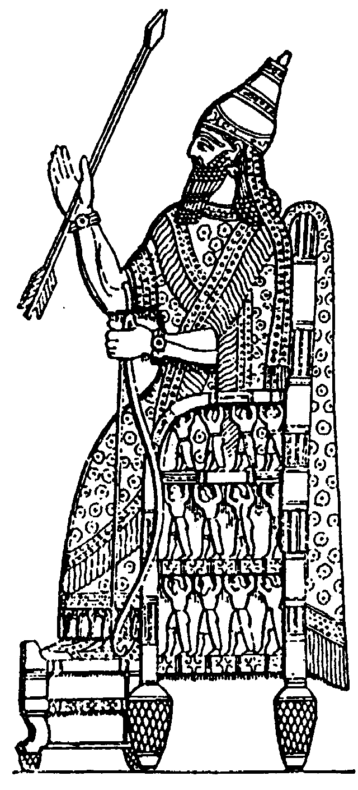

Israel married and divorced “Take unto thee a wife of whoredoms and children of whoredoms” (v2). Hosea enacts in his own life the tragedy of Yahweh and His wife. The Lord was married to Israel (Jeremiah 3:14). Now He would divorce her for adultery (Isaiah 50:1, Jeremiah 3:8). “Call his name Jezreel [God scatters]. ... Call her name Lo-ruhamah [no mercy] (v6). ... Call his name Lo-ammi [not My people]” (v9). Israel would be scattered, not His people, no more receive mercy.
“I will no more have mercy upon the house of Israel; but I will utterly take them away” (v6). “In the ninth year of Hoshea [722 BC], the king of Assyria [Shalmaneser] took Samaria and carried Israel away into Assyria, and placed them in Halah and Habor and the cities of the Medes” (2 Kings 17:6, 18:9–11). “The LORD removed Israel out of His sight, as He had said by all His servants the prophets. So was Israel carried away out of their own land to Assyria unto this day” (2 Kings 17:23). “The LORD was very angry with Israel and removed them out of His sight. There was none left but the tribe of Judah only” (2 Kings 17:18).
 “I will have mercy upon the house of Judah, and will save them” (v7). Israel never again returned to Palestine. By contrast, Judah was saved at this time, not by bow, sword, battle, horses or horsemen (v7), but by miraculous deliverance (2 Kings 18:13–19:37, 2 Chronicles 32:1–22, Isaiah 36–37). The Lord’s mercy to JUDAH would continue until their final rejection of Jesus in AD 33 (see Matthew 21:43). What would happen to ISRAEL?
The House of Israel to become Christian “There it shall be said unto them, ye are the sons of the living God” (v10). Who are the sons of God? “As many as received Him, to them gave He power to become the sons of God,” to all who believe on His name (John 1:12). “As many as are led by the Spirit of God, they are the sons of God” (Romans 8:19). “That ye may be blameless and harmless, the sons of God” (Philemon 2:15). “Behold, what manner of love the Father hath bestowed upon us, that we should be called the sons of God. Beloved, now are we the sons of God” (1 John 3:1–2).
The destiny of the exiled 10-tribed House of Israel, “the lost sheep of the house of Israel” (Matthew 10:6, 15:24), the “other sheep I have, which are not of this [Jewish] fold” (John 10:16), was to become sons of God, Christians. Thus they would become the nucleus of the New Israel, the Church—and foundation of the Kingdom of God on earth.
Sennacherib, king of Assyria, took most of Judah in 701 BC,
21 years after the ten tribes of Israel were deported
Next chapter | back to Contents | back to Introduction and Map